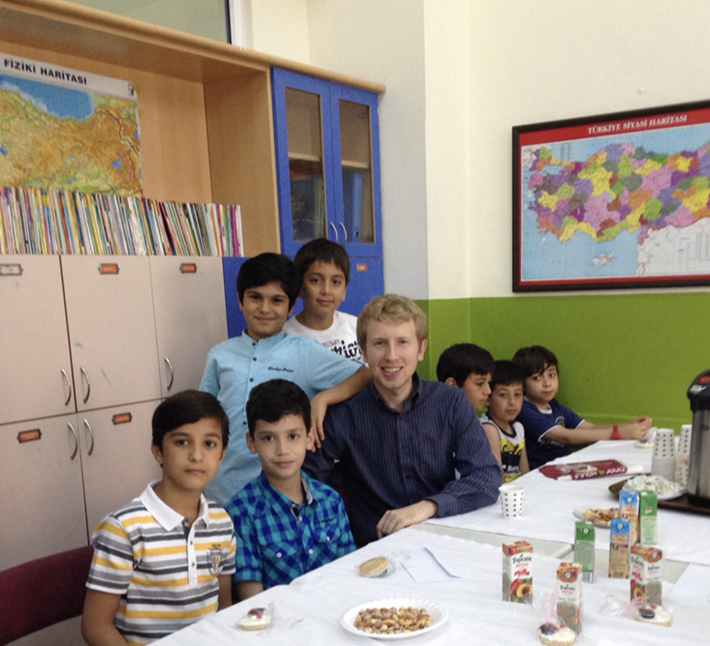

Introduction
Hello, my name is Mike Browne and I appreciate that you are taking the time to visit my personal website. My caeer trajectory includes experiences as an English Teacher, Physical Education teacher, Data Analyst, and now I'm pursuing a job as a Software Developer.
In my spare time I love to travel, read a good book, play board games, or simply enjoy the outdoors; whether that means going to the beach or taking a hike.
Software Developer - Actualize Coding Bootcamp
I have recently just graduated from Actualize Coding bootcamp where I took night classes for the past 3 months. While attending, I created a website called "Windy City Vibes" where I used the Vue.js framework for my frontend and created a backend using Ruby on Rails.
Not only did I learn how to code using these 2 amazing languages, but I immersed myself in other tools such as Git, Github, PostgresSQL, Heroku, Bootstrap, HTML, and CSS. While I've dipped my toes in the water for 3 months, I am still on the very beginning of my coding journey! I'm ready to continue growing and after seeing what I have learned in a few short months, I am excited to see how much more I can learn over the next few years!
Data Analyst Contractor and Intern
I am currently working at HERE Technologies. It is my job to collect data for deep machine learning algorithms which are being trained to operate autonomous vehicles. On a daily basis, I use Linux, Git, work with bash scripts, and Lidar Data. I also participate in daily standups and bi-weekly sprint reviews.
This is my first job out of graduate school where I graduated with a Master's in Geography. There is no doubt that working at this company got me interested in coding as I worked with 11 other Senior Developers who are some of the brightest minds in the industry. I learned so much daily and I would highly recommend giving HERE a look if you haven't already!
English Teacher
After graduating from the University of Illinois with a Bachelors Degree in Geography, I decided to teach English in Istanbul, Turkey. My first year, I worked as a elementary and middle school teacher in a private school. My second year, my school made me a Physical Education teacher who taught English on the side! Not only did my students learn the fundamentals of English, but I taught them a few soccer tricks too.
Apart from teaching English, I gained some valuable life skills of how to work with kids and adults. Not only this, but it was all in a cross cultural setting where I had to learn the language and understand the non-verbal communication differences. Although the best part is, I got to live in Istanbul for 2 years and I would highly recommend visiting if you haven't already!!
